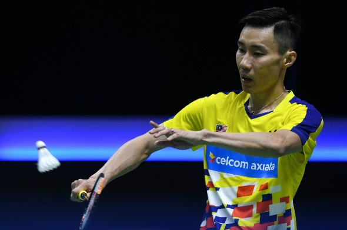

🎾
KUIZ
1. Adakah badminton adalah sejenis permainan jaring?
Ya
Tidak
2. Siapakah ikon sukan badminton di Malaysia?
Dato Misbun Sidek
Dato Lee Chong Wei
Lee Zii Jia
Chen Long
3. Sebelum istilah "badminton" diperkenalkan, sukan ini pernah dikenali dengan nama ____
bulu hayun
bulu ayam
bulu tangkis
bulu terbang
4. Yang manakah
BUKAN
kategori yang betul dalam badminton?
beregu lelaki
beregu campuran
percampuran
perseorangan
5. Permainan badminton memerlukan peralatan seperti:
gelanggang, jaring, raket dan bulu tangkis
padang, raket, bulu tangkis dan wisel
raket, bulu tangkis, jaring, tuala dan air
gelanggang, bulu tangkis, jaring dan kayu
6. Kedudukan "umpire" yang mengadili perlawanan badminton berada di ____
tengah dan belakang gelanggang
sisi dan belakang gelanggang
hujung dan bucu gelanggang
tengah dan sisi gelanggang
7. Pertubuhan badminton di peringkat antarabangsa dikenali sebagai Persekutuan Badminton dunia atau singkatannya, _____
BWF
WBC
WWE
FIFA

8. Apakah kemahiran yang ditunjukkan dalam gambar di atas?
pukulan lob
pukulan smash
servis
9. Pukulan ______ adalah pukulan berkuasa tinggi untuk memastikan rall serta-merta
junam
lob
kilas
smash
10. Berikut adalah kejohanan badminton di peringkat anarabangsa
KECUALI
Piala Sudirman
Piala Summbangsih
Piala Thomas
Piala Uber
SUBMIT QUIZ